Pendahuluan
Pengenalan Laravel
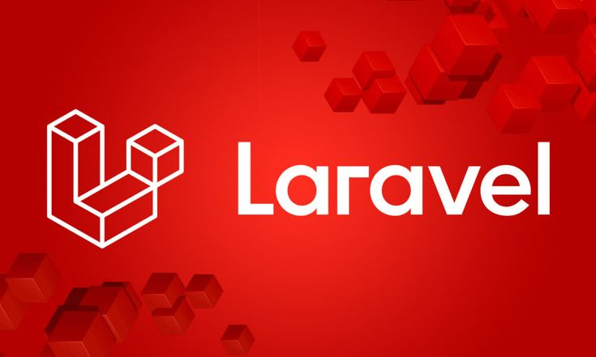
- Apa itu Framework dalam Pemrograman
- Memahami definisi dan sejarah singkat Laravel sebagai PHP framework
- Mengenal fitur-fitur utama yang membuat Laravel populer di industri
- Memahami konsep arsitektur MVC (Model-View-Controller)
- Mengetahui kapan dan mengapa Laravel digunakan dalam proyek web
Apa itu Framework?
Framework dalam bahasa Indonesia berarti kerangka. Biasanya kita kenal juga dengan istilah template atau blueprint. Kerangka diperlukan sebelum membuat atau membangun sesuatu. Kerangka dibuat untuk mempermudah pekerjaan membuat sesuatu.
Dalam dunia pemrograman, Framework adalah sebuah software untuk memudahkan programmer membuat aplikasi atau program pada web. Dengan menggunakan framework, sebuah aplikasi akan terstruktur dan tersusun rapi.
Hari ini, kita akan khusus membahas Framework PHP. PHP adalah sebuah bahasa pemrograman open-source yang berjalan di sisi server (server-side) khusus untuk pengembangan aplikasi web dinamis dan interaktif. Seperti yang sudah diketahui, framework diperlukan developer untuk membuat web/aplikasi yang terstruktur. Diantara banyak framwork PHP yang ada, Laravel merupakan framework yang saat ini paling populer.
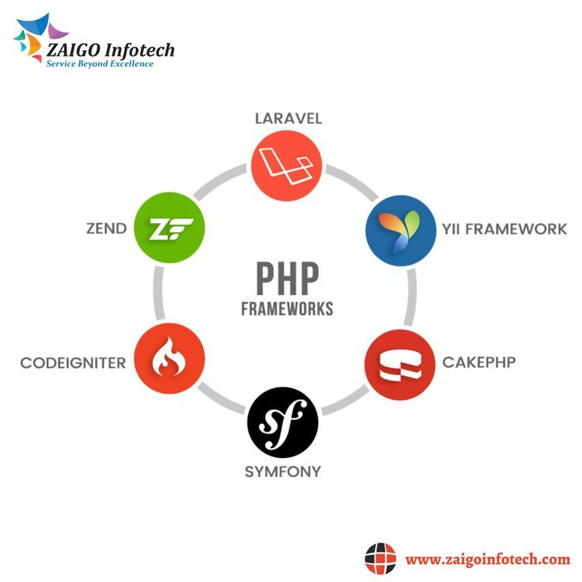
Fun Fact
Hingga awal 2026, repositori utama Laravel telah melampaui 80.000+ stars, menjadikannya framework PHP dengan dukungan komunitas terbesar di platform tersebut.
Apa itu Laravel?

Laravel adalah PHP web framework yang bersifat open-source, dibuat oleh Taylor Otwell dan pertama kali dirilis pada tahun 2011. Laravel dirancang untuk membuat proses pengembangan web menjadi lebih menyenangkan tanpa mengorbankan fungsionalitas aplikasi.
Framework ini mengikuti pola arsitektur MVC (Model-View-Controller) dan menyediakan berbagai fitur bawaan seperti routing, autentikasi, session, caching, dan masih banyak lagi — sehingga developer tidak perlu membangun semuanya dari nol.
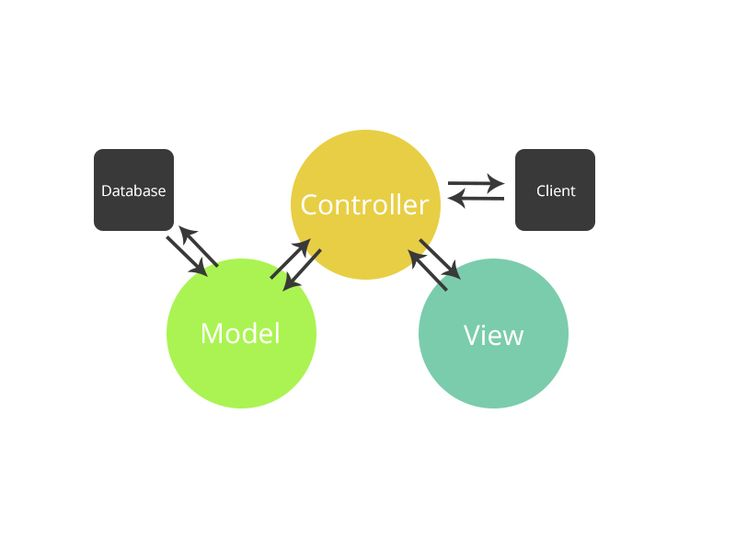
Fitur Unggulan Laravel
Beberapa fitur yang membuat Laravel menonjol dibanding framework lain:
- Command Line Tool (Artisan) — Fitur Command Line untuk memudahkan programmer melakukan beberapa pekerjaan.
- RESTful Routing — RESTful adalah cara baru dalam mengelola request seperti GET, POST, PUT, PATCH, DELETE, STORE.
- Composer — Composer adalah Dependency Management PHP yang membantu programmer untuk menggunakan library.
- Beautiful Template Engine (Blade) — Laravel dilengkapi dengan template engine dengan nama Blade Template Engine untuk memudahkan penggabungan kode PHP pada HTML.
- Database Migration — Fitur untuk menjaga histori migrasi database (CREATE, ALTER, DROP), mengaplikasikan migrasi baru ataupun mengembalikannya.
- Eloquent ORM — Fitur Eloquent ORM (Object Relational Model) memungkinkan penulisan kode yang berhubungan dengan objek (Entitas / Tabel pada Database) dioperasikan menggunakan konsep OOP.
Arsitektur MVC
Laravel mengikuti pola Model-View-Controller. Setiap lapisan memiliki tanggung jawab yang jelas dan terpisah:
- Model — Mewakili data dan logika bisnis. Berinteraksi langsung dengan database (insert, update, delete).
- View — Bagian yang bertugas menampilkan informasi User Interface kepada pengguna, seperti halaman HTML atau tampilan aplikasi.
- Controller — Bagian yang menghubungkan Model dan View. Controller menerima instruksi dari pengguna, memproses data melalui Model, dan memilih View untuk ditampilkan.
Refleksi
- Setelah membaca modul dan memahami materi, saya dapat mengetahui framework dapat sangat membantu pada pemrograman, utamanya dalam membuat aplikasi web yang terstruktur dan terkonsep.
- Saya dapat mengetahui bahwa Laravel merupakan salah satu framework bahasa pemrograman PHP yang paling populer saat ini.
- Saya dapat memahami dari sejarah hingga fitur yang terdapat pada laravel.
- Saya juga dapat memahami bahwa konsep MVC yang digunakan pada banyak framework sangat memudahkan programmer.
- 1Modul Pembelajaran — Sesi 22 Framework.pdf
- 2Video Pembelajaran — CodingWithUs #16 : Pembahasan Framework : Laravel
- 3Laravel Documentation — laravel.com
Part 1
Membuat Project Laravel
- Menginstal Laravel menggunakan Composer secara lokal
- Memahami struktur folder dan fungsi masing-masing direktori
- Menjalankan development server dengan perintah Artisan
- Mengenal perintah-perintah dasar Artisan CLI
Persiapan
Pastikan sudah menginstal minimal versi PHP 8.2+ dan Composer sebelum memulai. Selain itu, persiapkan juga local server environtment, seperti xampp atau laragon serta gunakan code editor seperti visual studio code atau sublime text.
Periksa apakah sudah menginstal PHP dan Composer dengan perintah berikut:
# Cek versi PHP
php -v
# Cek versi Composer
composer -vJika belum menginstal PHP dan Composer, silahkan install terlebih dahulu PHP dan Composer.
Instalasi Laravel
Setelah semua tools telah dipersiapkan, sekarang kita langsung saja membuat project Laravel nya. Berikut adalah perintah untuk membuat project Laravel:
# Membuat project baru menggunakan Composer
composer create-project laravel/laravel nama-project
# Masuk ke direktori project
cd nama-project
# Jalankan development server
php artisan serveJika berhasil, server akan berjalan di http://127.0.0.1:8000
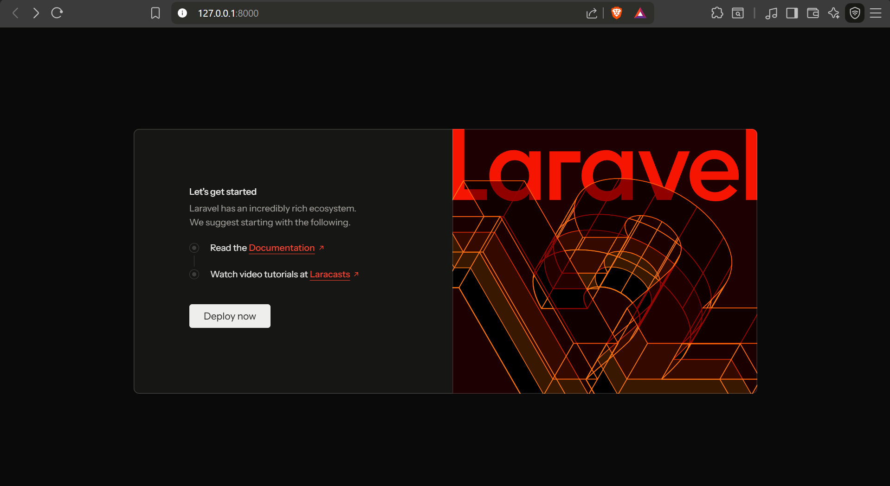
Catatan
Disini saya menggunakan laragon versi 6.0 sebagai local environtment server, php versi 8.2, composer versi 2.4.1, dan laravel versi 12.0.0
Struktur Folder Laravel
nama-project/
├── app/ # Logika utama aplikasi (Model, Controller)
├── bootstrap/ # File inisialisasi & cache framework
├── config/ # Kumpulan file konfigurasi
├── database/ # Database migrations, seeders, factories
├── public/ # Document root server (index.php, CSS, JS)
├── resources/ # Views (Blade templates) & un-compiled assets
├── routes/ # Tempat mendaftarkan route web/API
├── storage/ # File cache, sesi, file unggahan, & log
├── tests/ # Folder otomasi testing aplikasi
├── vendor/ # Package & library pihak ketiga (Composer)
├── .editorconfig # Aturan format coding (indentasi, dsb)
├── .env # Info kredensial database & environment
├── .env.example # Contoh / template bawaan untuk file .env
├── .gitattributes # Aturan spesifik path text untuk Git
├── .gitignore # Daftar file/folder yang diabaikan Git
├── artisan # Skrip CLI untuk menjalankan command Laravel
├── composer.json # Daftar package / library PHP project
├── composer.lock # Pengunci versi spesifik library PHP
├── package.json # Daftar library Node.js (seperti NPM/Yarn)
├── phpunit.xml # Pengaturan bawaan testing (PHPUnit)
├── README.md # Ringkasan informasi tentang project
└── vite.config.js # Pengaturan bundler asset frontend ViteMembuat View dan Route Sederhana
Modifikasi file routes/web.php dan buatlah route sederhana, seperti berikut.
# Membuat route sederhana
<?php
use Illuminate\Support\Facades\Route;
Route::get('/', function () {
return view('welcome');
});
Route::get('/belajar', function () {
echo 'Halo, tulisan ini ditampilkan dari Routes';
});
Kemudian, akses web browser pada alamat http://localhost:8000/belajar, maka akan muncul tampilan seperti berikut.
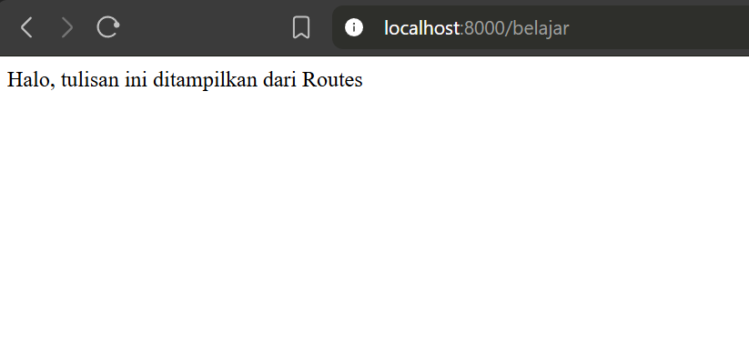
Selanjutnya, buatlah sebuah file view sederhana di folder resources/views dengan nama belajar.blade.php, seperti berikut.
Halo, ini adalah tampilan dari viewsModifikasi juga file routes/web.php, seperti berikut.
Route::get('/', function () {
return view('welcome');
});
Route::get('/belajar', function () {
return view('belajar');
});
Kemudian, akses kembali web browser pada alamat http://localhost:8000/belajar, maka akan muncul tampilan seperti berikut.
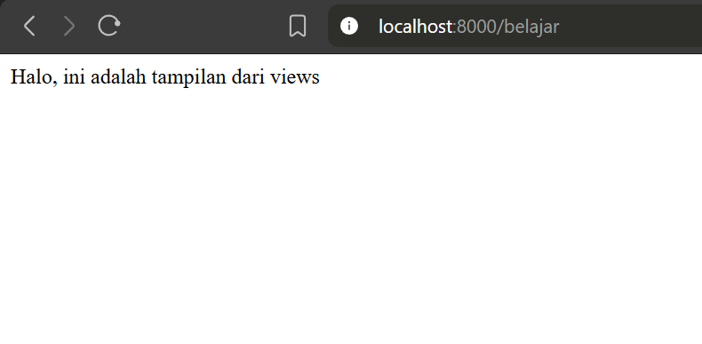
Mari kita coba mengirim data ke view
Cara 1, Menggabungkan data dalam satu variabel array asosiatif, sehingga data yang dikirim ke view hanya 1 saja
Route::get('/belajar', function () {
$data['nama'] = "Alif";
$data['jk'] = "Laki-laki";
return view('belajar', $data);
});
Cara 2, Menggunakan fungsi compact()
Route::get('/belajar', function () {
$nama = "Alif";
$jk = "Laki-laki";
return view('belajar', compact('nama', 'jk'));
});
Kemudian, modifikasi file resources/views/belajar.blade.php, seperti berikut.
Halo, ini adalah tampilan dari views
<br>
Halo {{ $nama }}
<br>
Jenis Kelamin: {{ $jk }}
Akses kembali web browser pada alamat http://localhost:8000/belajar, maka akan muncul tampilan seperti berikut.
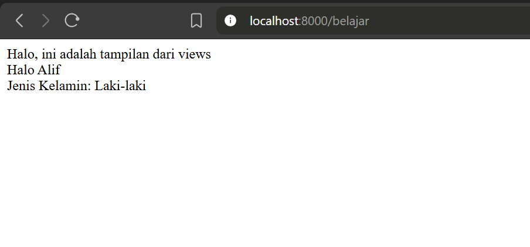
Ubah tampilan pada file resources/views/belajar.blade.php, menjadi tabel seperti berikut.
Halo, ini adalah tampilan dari views
<br>
<table border="1">
<tr>
<td>Nama</td>
<td>{{ $nama }}</td>
</tr>
<tr>
<td>Jenis Kelamin</td>
<td>{{ $jk }}</td>
</tr>
</table>
Kemudian, akses kembali web browser pada alamat http://localhost:8000/belajar, maka akan muncul tampilan seperti berikut.
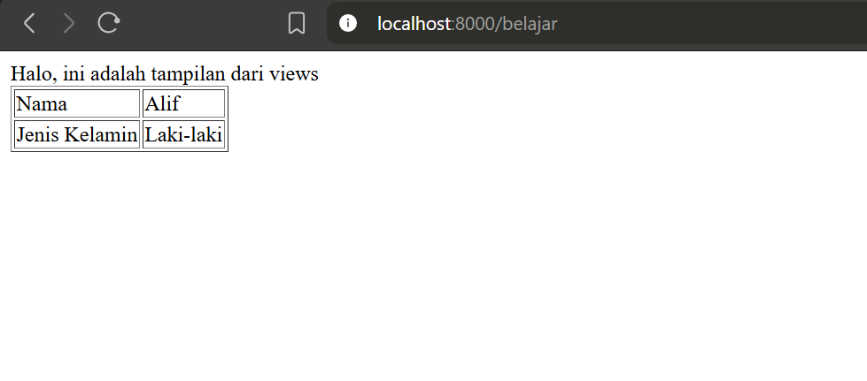
Refleksi
- Saya dapat menginstal Laravel dan membuat project laravel pertama saya
- Saya telah berhasil mempraktekan membuat route dan view
- 1Modul Pembelajaran — Sesi 22 Framework.pdf
- 2Video Pembelajaran — CodingWithUs #16 : Pembahasan Framework : Laravel
Part 2
Laravel Database Migration

- Memahami definisi dan manfaat Laravel Database Migration.
- Cara membuat tabel baru dengan menggunakan migrasi.
- Menambahkan kolom baru ke tabel yang sudah ada.
- Mekanisme
rollbackuntuk membatalkan perubahan migrasi yang telah dilakukan. - Mengubah struktur tabel (seperti nama kolom atau tipe data) menggunakan migrasi baru.
Apa itu Laravel Database Migration dan Mengapa Penting?
Database Migration adalah fitur Laravel untuk menjaga histori perubahan database (CREATE, ALTER, DROP) dan kemampuannya untuk mengaplikasikan migrasi baru ataupun mengembalikannya. Fitur ini memiliki mekanisme yang sama seperti Git di mana kita dapat menjalankan (execute) dan mengembalikan (revert) perubahan migrasi yang kita lakukan.

Persiapan Awal: Konfigurasi Lingkungan Laravel
Sebelum memulai dengan Migration, langkah pertama yang diperlukan adalah memastikan lingkungan Anda disiapkan dengan benar, termasuk memastikan versi PHP dan juga sistem konfigurasi environment. Pertama, periksa versi PHP yang terpasang:
# Cek versi PHP
php -v
PHP 8.2.29 (cli) (built: Jul 1 2025 20:21:12) (ZTS Visual C++ 2019 x64)
Copyright (c) The PHP Group
Zend Engine v4.2.29, Copyright (c) Zend TechnologiesJika output yang muncul seperti ini, bisa langsung skip ke buat database.
Atur Konfigurasi Path PHP
Buka Windows Explorer, cari folder PHP di folder laragon, kemudian copy alamat path tersebut pada address bar Lokasi folder PHP disesuaikan dengan lokasi kita menginstall Laragon/PHP nya
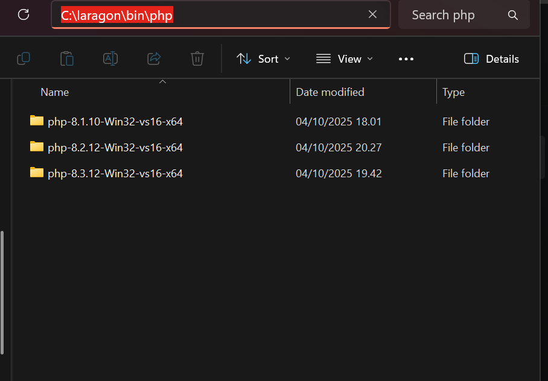
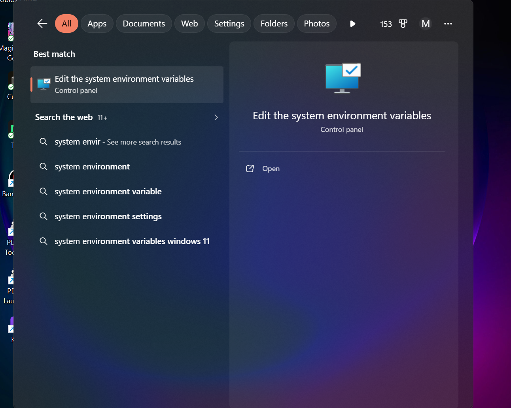
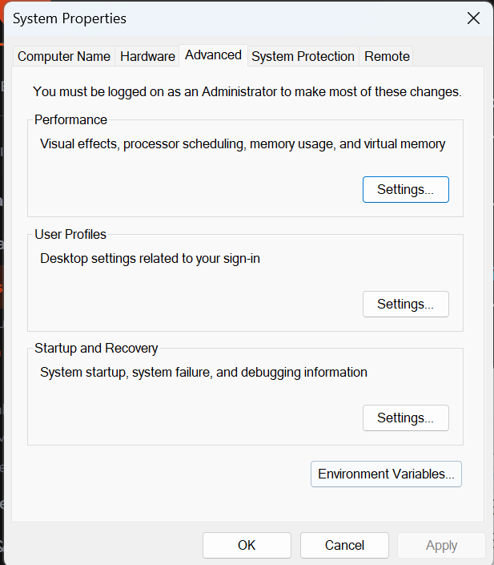
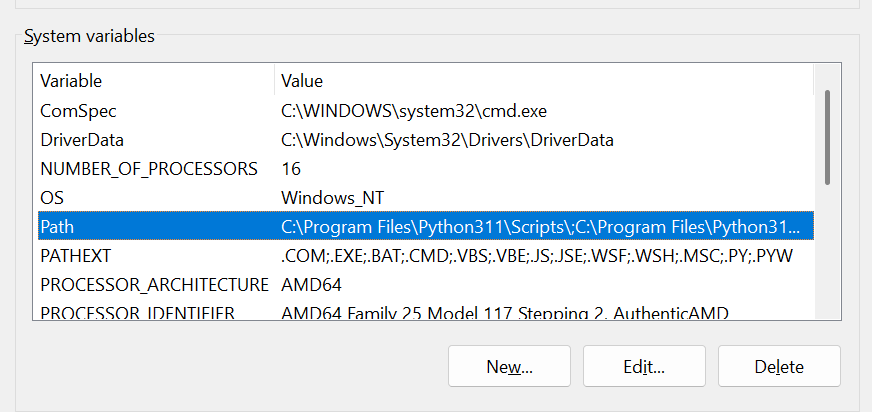
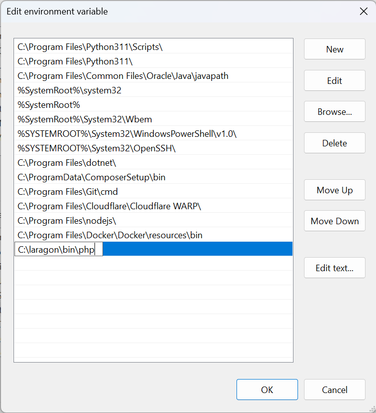
Konfigurasi environtment pada project Laravel
Buat database terlebih dahulu dengan nama db_laravel pada localhost/phpmyadmin/ atau klik menu Database pada Laragon. Login ke phpmyadmin dengan username root dan kosongkan kolom password, kemudian klik new.
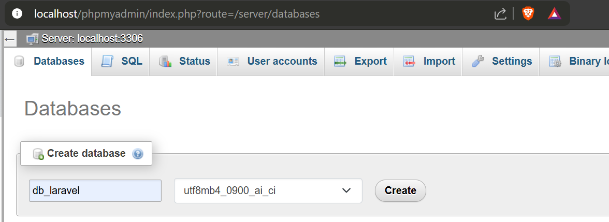
Buka file .env pada root folder project laravel, konfigurasi koneksi database di file tersebut (seperti DB_HOST, DB_PORT, DB_DATABASE, DB_USERNAME, dan DB_PASSWORD). Setelah mengatur database, kita bisa lanjut membuat tabel baru.
DB_CONNECTION=mysql
DB_HOST=127.0.0.1
DB_PORT=3306
DB_DATABASE=db_laravel
DB_USERNAME=root
DB_PASSWORD=Membuat Tabel Baru dengan Migrasi Laravel
Untuk membuat tabel baru seperti t_siswa, kita perlu membuat file migrasi baru menggunakan perintah console Artisan:
php artisan make:migration create_t_siswaFile baru akan berformat tanggal_create_t_siswa.php
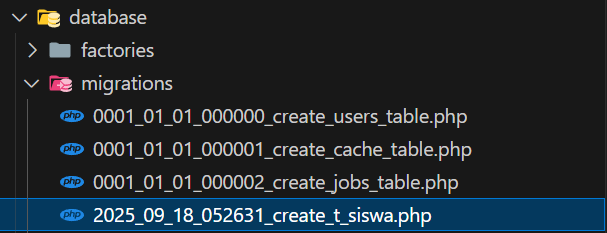
Perintah tersebut akan menghasilkan sebuah file di folder database/migrations/ dengan struktur yang memuat dua fungsi utama. Perlu diingat:
- Maksud dari
function up(): Fungsi yang dijalankan ketika database di migrate. Semua definisi skema diletakkan di sini. - Maksud dari
function down(): Fungsi yang dijalankan ketika database di rollback. Semua pemulihan atas pembuatan/modifikasi skema diletakkan di sini (misalnya perintah drop).
Saatnya mendefinisikan skema tabel: buat contohnya kolom nis, nama_lengkap, dan jenis_kelamin di file migrasi ini.
public function up()
{
Schema::create('t_siswa', function (Blueprint $table) {
$table->id();
$table->integer('nis')->unique();
$table->string('nama_lengkap', 100);
$table->enum('jenis_kelamin', ['L', 'P']);
$table->timestamps();
});
}Akhiri instruksi ini dengan menjalankan perintah php artisan migrate untuk melakukan sinkronisasi dengan database di phpMyAdmin. Setelah berhasil, silahkan cek phpMyAdmin untuk memverifikasi pembuatan tabel.
Menambahkan Kolom Baru ke Tabel yang Sudah Ada
Sekarang kita akan mencoba menambah column baru bernama goldar. Buat migration baru bernama add_goldar_t_siswa dengan ketik perintah:
php artisan make:migration add_goldar_t_siswa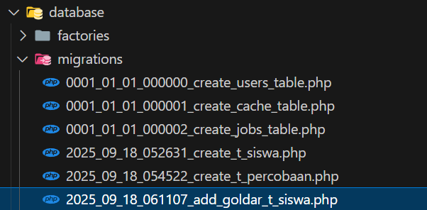
Buka dan modifikasi file migrasi yang dibentuk, kita memakai Schema::table() untuk mengubah struktur yang sudah ada.
public function up()
{
Schema::table('t_siswa', function (Blueprint $table) {
$table->string('goldar', 3)->nullable()->after('jenis_kelamin');
});
}
public function down()
{
Schema::table('t_siswa', function (Blueprint $table) {
$table->dropColumn('goldar');
});
}Jalankan kembali php artisan migrate untuk menerapkan perubahan penambahan kolom tersebut pada database Anda.
Memahami dan Menggunakan Rollback Migrasi
Rollback memiliki fungsi utama untuk membatalkan migrasi yang sudah kita lakukan sebelumnya. Skenario umum digunakan ketika kita ada kesalahan. Rollback akan menjalankan method down() untuk membatalkan file file yang sebelumnya kita `up()`. Jalankan perintah:
php artisan migrate:rollbackRollback menghasilkan output daftar migrasi yang dibatalkan sebelumnya. Perlu diketahui, fitur ini menghapus satu operasi migrasi mundur. Misalnya, kalau baru menambah kolom, yang di rollback adalah kolom tersebut.
Mengubah Struktur Tabel (ALTER TABLE) dengan Migrasi Baru
Melakukan perubahan pada database dapat kita lakukan melalui migrasi baru dengan beberapa fungsi ALTER TABLE yang disediakan laravel. Misalnya jika kita ingin mengubah jenis nama kolom jenis_kelamin dirubah namanya menjadi jk. Buat migrasi bernama change_jk_t_siswa dengan perintah:
php artisan make:migration change_jk_t_siswa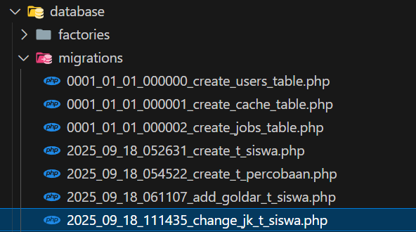
Lalu, modifikasi isinya dengan perintah di method up() menggunakan renameColumn():
public function up()
{
Schema::table('t_siswa', function (Blueprint $table) {
$table->renameColumn('jenis_kelamin', 'jk');
});
}
public function down()
{
Schema::table('t_siswa', function (Blueprint $table) {
$table->renameColumn('jk', 'jenis_kelamin');
});
}Refleksi
- Setelah melakukan praktik, kita dapat mengetahui Database Migration merupakan fitur penting yang sangat memudahkan pengembangan dan pengelolaan skema aplikasi database.
- Migration pada framework laravel sangat membantu manajemen dari histori setup skema sebuah database.
- Kita dapat membuat tabel, mengubah tabel, dan menghapus tabel hanya dari perintah artisan pada terminal.
- 1Modul Pembelajaran — Sesi 23 Framework.pdf
- 2Video Pembelajaran — CodingWithUs : Pembahasan Framework #17 : Laravel, DataBase Migration
- 3Laravel Documentation — laravel.com
Part 3
Laravel: Controller dan Facade DB
- Memahami peran dan definisi Controller dalam arsitektur MVC Laravel.
- Langkah-langkah praktis membuat Controller dan menghubungkannya dengan Route.
- Prinsip penamaan (PascalCase, camelCase) yang baik untuk Controller dan fungsinya.
- Mengenal Facade DB sebagai metode standar untuk interaksi database.
- Panduan menampilkan data dari database menggunakan Facade DB dan Blade Template (@foreach).
- Teknik querying data dasar dan lanjutan (ORDER BY, WHERE) dengan Facade DB.
Pendahuluan: Fondasi Aplikasi Laravel yang Kokoh
Memahami Controller dan interaksi Database merupakan hal mendasar dalam pengembangan aplikasi Laravel. Kedua komponen ini bertindak sebagai pondasi yang penting; mari kita bahas konsep tersebut secara mendalam untuk membantu Anda membangun aplikasi yang tidak hanya lebih rapi dan terstruktur, melainkan juga efisien kinerjanya.
• Apa itu Controller?
• Membuat Controller
• Interaksi Database menggunakan Facade DB
• Query Database menggunakan Facade DB
Apa Itu Controller? Perannya dalam Arsitektur MVC Laravel
Controller adalah komponen sistem yang memiliki tugas utama sebagai pengatur logika aplikasi dan jembatan alur data. Pada konsep MVC (Model-View-Controller) yang dianut framework Laravel, Controller bertugas merespon request lalu menghubungkan Model (Database) dengan View (Tampilan).
Konsep Pemisahan Logika
Pada Konsep MVC, Controller adalah yang bertugas untuk menghubungkan Model dengan View. Biasanya satu Controller dibuat untuk satu Modul atau entitas seperti SiswaController khusus untuk menangani proses berentitas Tabel Siswa.
Panduan Lengkap: Membuat Controller dan Menghubungkannya dengan Route
Kita dapat membuat Controller menggunakan command artisan bawaan Laravel. Sebagai contoh kita akan membuat controller SiswaController.
php artisan make:controller SiswaControllerSetelah controller berhasil dibuat, kita dapat menghubungkannya di file route routes/web.php. Ada bentuk umum yang direferensikan dalam dokumentasi Laravel untuk pemanggilan fungsi dari Controller class.
use App\Http\Controllers\SiswaController;
// Bentuk Umum Route dengan Controller
Route::get('/nama-route', [NamaController::class, 'Namafungsi']);
// Contoh implementasi
Route::get('/siswa', [SiswaController::class, 'index']);Konvensi Penamaan
Nama Controller usahakan PascalCase dan diakhiri dengan Controller (misal: SiswaController). Nama fungsi / method pada Controller usahakan camelCase (misal: index(), tambahSiswa()).
Mengelola Data: Interaksi Database Laravel Menggunakan Facade DB
Untuk menampikan data dari database, kita perlu terhubung dengan Database terlebih dahulu. Kali ini kita akan berkenalan dengan Facade Database (DB). Tapi sebelumnya mari kita buat query dummy terlebih dahulu di phpMyAdmin tabel t_siswa.
DB merupakan Facade dari Laravel untuk berekspresi / berinteraksi dengan Database. Facade adalah hasil dari implementasi class dengan method static, sehingga programmer dapat dengan mudah mengaksesnya hanya dengan memanggil nama class dan fungsinya secara static (Facade Pattern).
Modifikasi SiswaController yang dibentuk sebelumnya untuk mengambil data menggunakan Facade DB.
namespace App\Http\Controllers;
use Illuminate\Http\Request;
use Illuminate\Support\Facades\DB;
class SiswaController extends Controller
{
public function index()
{
// Menggunakan DB Select sederhana
$siswa = DB::select('SELECT * FROM t_siswa');
// Atau menggunakan Query Builder: DB::table('t_siswa')->get();
return view('siswa.index', compact('siswa'));
}
}Menampilkan Data Dinamis: Memanfaatkan Blade Template untuk Looping
Sesudah meneruskan variable $siswa ke view siswa.index, buat file view tersebut menjadi resources/views/siswa/index.blade.php dan kita dapat menampilkan semua data dengan direktif looping Blade.
<table border="1">
<tr>
<th>NIS</th>
<th>Nama Lengkap</th>
<th>Jenis Kelamin</th>
</tr>
@foreach($siswa as $p)
<tr>
<td>{{ $p->nis }}</td>
<td>{{ $p->nama_lengkap }}</td>
<td>{{ $p->jk }}</td>
</tr>
@endforeach
</table>@foreach Digunakan untuk melakukan looping data yang terdapat pada array atau object hasil passingan Controller. Bentuk umum nya sama seperti php: foreach($object as $item) dan ditutup menggunakan struktur @endforeach untuk menutup blok looping tersebut.
Menggali Lebih Dalam: Teknik Query Data Canggih dengan Facade DB
Facade DB menyediakan banyak fitur dan syntax dasar SQL. Kita bisa melakukan filter dan pengurutan (ORDER BY, WHERE) dengan syntax langsung.
- ORDER BY Menampilkan data diurutkan berdasarkan parameter. Misalnya berdasarkan urutan nama karakter alfabet:
DB::select('SELECT * FROM t_siswa ORDER BY nama_lengkap ASC'); - WHERE Menampilkan list filter spesifik. Misalnya yang golongan darahnya O:
DB::select("SELECT * FROM t_siswa WHERE goldar = 'O'");
Studi Kasus: Mengaplikasikan Controller & Facade DB dalam Berbagai Skenario
Untuk melatih implementasi yang sesungguhnya tentang penggunaan Controller MVC, maka praktikan poin-poin studi kasus mandiri berikut:
- Pindahkan 3 route yang sebelumnya anda buat di project
routesawal keSiswaController. - Isi data dummy untuk tabel
t_kelasminimal 5 data. Lakukan hal yang sama seperti tabelt_siswauntuk tabelt_kelas: yaitu membuat Controller, dan modifikasi view-nya untuk menampilkan data di browser darit_kelas. - Lakukan beberapa skenario query berikut ini untuk menampilkan data pada
t_kelas:- Tampilkan data dari
t_kelas, diurutkan berdasarkan lokasi ruangan. - Tampilkan data dari
t_kelasyang memiliki nama wali kelas diawali huruf A saja. - Tampilkan data dari
t_kelasdiurutkan berdasarkan jurusan dan nama_kelas. - Tampilkan data dari
t_kelashanya data jurusan Rekayasa Perangkat Lunak saja.
- Tampilkan data dari
Part 4
Panduan Lengkap: Membuat & Memvalidasi Data di Laravel dengan Façade DB
- Membuat Form dan Mengelola Rute untuk Penambahan Data.
- Menerapkan CSRF Protection untuk Keamanan Form.
- Menyimpan Data ke Database dengan Façade DB.
- Menampilkan Pesan Sukses atau Gagal Setelah Aksi Data.
- Melakukan Validasi Input Form untuk Data yang Akurat.
- Menjaga Nilai Input Pengguna Saat Validasi Gagal (Old Value).
Memulai: Form dan Rute untuk Penambahan Data
Untuk membuat fitur penambahan data, langkah pertama adalah menyediakan tombol navigasi dan form. Tambahkan link di view HTML untuk berpindah halaman dan buatlah route baru untuk menampilkan halamannya.
<!-- Tambahkan link menu menuju form add -->
<a href="{{ url('siswa/create') }}">Tambah Data</a>Penggunaan url('nama-route') pada Blade digunakan untuk menciptakan URL lengkap (absolut) menuju endpoint tertentu. Sekarang alokasikan di file routes/web.php rute URL tersebut ke method di Controller.
Route::get('/siswa/create', [SiswaController::class, 'create']);Dan pada controller SiswaController, kembalikan rute tersebut ke sebuah file view baru bernama form.blade.php di sub-folder siswa/.
public function create()
{
// Menampilkan view dengan nama form pada folder views/siswa/
return view('siswa.form');
}Mengamankan Form dengan CSRF Protection
Pada saat menulis formulir HTML yang metode request-nya mengubah data (menggunakan HTTP metode selain GET seperti POST, PUT, PATCH, DELETE), tag @csrf secara krusial harus dicantumkan di dalamnya.
<form action="{{ url('siswa') }}" method="POST">
@csrf
<!-- input element goes here -->
<button type="submit">Simpan</button>
</form>@csrf wajib digunakan didalam form sebagai pelindung keamanan dari serangan CSRF dengan membuat sebuah hidden input yang memegang token (_token). CSRF (Cross-Site Request Forgery) merupakan bentuk serangan eksploitasi web form yang dilakukan tanpa wewenang korban yang tidak dikehendaki.
Menyimpan Data Baru ke Database dengan Façade DB
Tahap selanjutnya adalah menangkap inputan tersebut dan memasukkannya ke database. Tambahkan endpoint POST pada route kalian.
// Mengarahkan route request POST ke function store
Route::post('/siswa', [SiswaController::class, 'store']);Kemudian definisikan function store() di dalam Controller untuk memproses request input dan database query-nya menggunakan DB::table()->insert().
public function store(Request $request)
{
// Menangkap seluruh request input sebagai array dari view form
$input = $request->all();
// Menghapus key _token pada request array karena kolom ini tidak dicatat database
unset($input['_token']);
// Melakukan insert data ke tabel t_siswa dimana datanya berasal dari array $input
$status = DB::table('t_siswa')->insert($input);
}Memberikan Umpan Balik: Pesan Sukses dan Gagal
Pengguna butuh respon di layar apa yang terjadi jika berhasil menambahkan data maupun saat ada error. Sesuaikan method Controller return ke sistem pengalihan router dengan membubuhi sebuah Session Flasher berisi feedback untuk ditampilkan ke pengguna.
if ($status) {
// Jika insert berhasil diarahkan kembali ke alamat tabel list.
// Bawa message via parameter flash session with()
return redirect('/siswa')->with('success', 'Data berhasil ditambahkan');
} else {
return redirect('/siswa/create')->with('error', 'Data gagal ditambahkan');
}Nah untuk menampilkan nilainya di sisi pengguna Blade, tangkap flash message dari session menggunakan syntak direktif blade:
<!-- Laravel 10.x ke atas merekomendasikan menggunakan direktif @session -->
@session('success')
<div class="alert alert-success">{{ $value }}</div>
@endsession
@session('error')
<div class="alert alert-error">{{ $value }}</div>
@endsessionPada blok kodingan di atas, jika session bernama success di-passing server, ia akan memunculkan div bertuliskan Data berhasil ditambahkan.
Memastikan Data Berkualitas dengan Input Validation
Jangan mempercayai input form sembarangan karena bisa menimbulkan invalid state di level database maupun kerawanan. Laravel menyediakan built-in Validation terpadu lewat function instans request yaitu validate().
public function store(Request $request)
{
// Bentuk aturan Rule: 'key' => 'rule1:value|rule2'
$request->validate([
'nis' => 'required|numeric|max:10',
'nama_lengkap' => 'required|string|max:100',
'jenis_kelamin' => 'required|in:L,P',
'alamat' => 'nullable'
]);
/* Lanjut blok DB Query selanjutnya... */
}Tampilkan pesan validasi errornya di layar html jika pengguna menerobos aturan tersebut dengan memberdayagunakan object array `$errors` yang telah dicancel.
@if ($errors->any())
<div class="alert alert-danger">
<ul>
@foreach ($errors->all() as $error)
<li>{{ $error }}</li>
@endforeach
</ul>
</div>
@endifMeningkatkan Pengalaman Pengguna: Menampilkan Nilai Input Lama
Ketika validasi server gagal (Request Invalid), semua inputan client tentu akan direset dan hilang. Hal yang tak sedap ini dapat memakan waktu. Beruntunglah kita punya helper old() yang dapat ditautkan di properti form yang membuat kolom dapat merekonstruksi entrian data input yang salah.
<!-- Bentuk umum menampilkan old value -->
<label>NIS</label>
<input type="text" name="nis" value="{{ old('nis') }}">Studi Kasus: Mengaplikasikan Konsep ke Tabel Lain
Ayo menantang pemahaman logika kamu dengan kasus yang berbeda. Lakukan hal yang persis sama seperti yang sudah dijelaskan pada tahap ini untuk struktur entitas tabel lainnya, yaitu: t_kelas:
- Buatlah rute, view form add untuk fitur tabel kelas baru beserta success/error message feedback-nya.
- Implementasikan validasi untuk tabel t_kelas, coba tambahkan constraint field validasi seperti `minribusi_huruf` misal pada kode kelas atau syarat nilai minimum murid dsb.
- Pastikan untuk mengimplementasikan bantuan User’s Old Value ke masing-masing input elements.
Part 5
Memahami dan Mengimplementasikan Edit & Hapus Data dengan DB Facade di Laravel
- Langkah-langkah detail untuk mengimplementasikan fungsionalitas Edit Data di Laravel.
- Langkah-langkah detail untuk mengimplementasikan fungsionalitas Delete Data di Laravel.
- Modifikasi yang diperlukan pada file view (`.blade.php`), route (`web.php`), dan controller (`SiswaController.php`).
- Penggunaan `DB::table()` untuk operasi database seperti `find()`, `where()`, `update()`, dan `delete()`.
- Memanfaatkan fungsi helper `old()` untuk mengisi form edit secara otomatis.
Pendahuluan: Mengapa Edit dan Hapus Data Krusial dalam Aplikasi Web?
Operasi CRUD (Create, Read, Update, Delete) merupakan pilar bagi sebagian besar aplikasi web back-end. Tanpa Update, data yang salah ketik atau data yang usang tidak bisa diperbaiki. Tanpa Delete, data sampah rentan menumpuk. Dokumen ini secara khusus membahas implementasi lanjutan dari 'Edit Data with Façade DB' dan 'Delete Data with Façade DB'.
Langkah 1: Menyiapkan Tampilan untuk Aksi Edit Data
Untuk mengedit sebaris record, kita harus masuk ke interface daftar List terlebih dulu lalu menambahkan object tombol aksi Edit.
<!-- Tambahkan Header Aksi -->
<th>Aksi</th>
<!-- Di dalam loop foreach data siswa -->
<td>
<a href="{{ url('siswa/'.$p->id.'/edit') }}" class="btn btn-warning">Edit</a>
</td>Langkah 2: Mendefinisikan Rute untuk Proses Edit Data
Dibanding membuat satu route Controller, form edit butuh 2 route — satu route GET untuk menampilkan UI Form Edit, dan method spesifik rute PATCH (HTTP Protocol) untuk mengirimkan update modifikasinya via submit HTML secara aman terpisah.
Route::get('/siswa/{id}/edit', [SiswaController::class, 'edit']);
Route::patch('/siswa/{id}', [SiswaController::class, 'update']);Variabel ID dilempar melalui placeholder URL brace kurung kurawal yakni {id}. Nantinya ini akan ditangkap oleh Controller otomatis.
Langkah 3: Mengimplementasikan Fungsi `edit()` di Controller
Sekarang buat fungsi edit($id) di controller untuk mencari database target berdasarkan ID tersebut menggunakan DB Facade `find()` lalu passing-kan hasilnya ke Blade View.
public function edit($id)
{
// Mencari data pada t_siswa yang memiliki primaryKey bernilai param URL $id
$siswa = DB::table('t_siswa')->find($id);
// Passing object database sebagai array data untuk ditampilkan ke file balikan
return view('siswa.form', compact('siswa'));
}Langkah 4: Menyesuaikan Form Edit dengan Pra-Isi Data Menggunakan `old()`
Coba gunakan kembali file template form yang digunakan pada fitur Create sebelumnya (contohnya `siswa/form.blade.php`). Karena kali ini proses yang dijalankan adalah meng-edit, form action attribute-nya harus diarahkan berdasarkan ID. Metode bawaannya pun harus di override ke format HTTP PATCH menggunakan tag directive @method('PATCH'), dan panggil value default dari data array object tabel `$siswa` memanfaatkan parameter kedua argumen helper old().
<!-- Modifikasi logic URL dan HTTP method jika ini form edit vs create -->
<form action="{{ isset($siswa) ? url('siswa/'.$siswa->id) : url('siswa') }}" method="POST">
@csrf
@if(isset($siswa))
@method('PATCH')
@endif
<!-- Bentuk umum old('value_request', 'default_database') -->
<label>Nama Lengkap</label>
<input type="text" name="nama_lengkap"
value="{{ old('nama_lengkap', @$siswa->nama_lengkap) }}">
<button type="submit">Simpan</button>
</form>Pada blok kode di atas, fungsi old('value', 'default') ditambahkan parameter *default* untuk mengatur value awal input dengan mengambil referensi dari properti variabel array `$siswa->nama_lengkap`. Jika form ter-submit dan menabrak validasi error, kolom form tersebut akan override menampilkan sisa log session yang keliru ketimbang argumen default dari tabelnya yang asli.
Langkah 5: Mengimplementasikan Fungsi `update()` untuk Menyimpan Perubahan
Sekarang tangkap patch form rekues tersebut dan olah payloadnya pada Controller melalui fungsi abstrak `update`.
public function update(Request $request, $id)
{
// 1. Validasi Data dulu (opsional disarankan)
// $request->validate([...]);
$input = $request->all();
unset($input['_token']);
unset($input['_method']);
// 2. Menjalankan SQL Update DB data t_siswa disaring where(id) parameter request url
$status = DB::table('t_siswa')->where('id', $id)->update($input);
if ($status) {
return redirect('/siswa')->with('success', 'Data berhasil diupdate');
}
return redirect('/siswa')->with('error', 'Data gagal diupdate');
}Langkah 6: Fungsionalitas Hapus Data: Persiapan Tampilan
Fitur Delete sebaiknya menghindari interaksi click via tag URL (GET Link Anchor ``). HTML form request harus diamankan lewat aksi method DELETE supaya tidak mudah tergigit eksploitasi peretasan. Sehingga kita meredam request DELETE berbalut dalam element `<form>` di sisi `index.blade.php` List siswa.
<!-- Menyisipkan action link button hapus di tabel list index -->
<td>
<form action="{{ url('siswa/'.$p->id) }}" method="POST" onsubmit="return confirm('Yakin dihapus?')">
@csrf
@method('DELETE')
<button type="submit" class="btn btn-danger">Delete</button>
</form>
</td>Langkah 7: Mendefinisikan Rute untuk Proses Hapus Data
Atur sebuah route web berprotokol DELETE yang menuju argumen object `destroy()` pada Controller route.
// Mengarahkan route /siswa/{id} method Request HTTP DELETE ke function destroy
Route::delete('/siswa/{id}', [SiswaController::class, 'destroy']);Langkah 8: Mengimplementasikan Fungsi `destroy()` di Controller
Terakhir, pada SiswaController panggil metode sintaks `DB Facade` query bawaan `delete()` pada baris object tersebut berdasarkan argumen `$id` nya untuk mengeksekusi penghapusan instance presisi object pada SQL-nya.
public function destroy($id)
{
// Menghapus data pada baris t_siswa yang memiliki id parameter $id
$status = DB::table('t_siswa')->where('id', $id)->delete();
if ($status) {
return redirect('/siswa')->with('success', 'Data berhasil dihapus!');
}
return redirect('/siswa')->with('error', 'Data tidak ditemukan!');
}Langkah 9: Pengujian Akhir: Memastikan Edit dan Hapus Berjalan Lancar
Untuk mengamankan fungsional kode Anda, sekarang akses rute /siswa kembali melalui local web browser dan simulasikan interaksi klik pada tombol Edit. Uji logika update dengan mengganti beberapa bagian nama lalu tekan tombol Simpan, periksa apakah database terupdate dengan hasil di layar memicu kemudi Session Feedback Success. Setelah itu, uji cobakan aksi menekan tombol Delete diikuti dengan men-trigger konfirmasi popup browser bawaan. Jika oke, proses terverifikasi komplit.
Studi Kasus dan Tantangan Lanjutan
STUDI KASUS 1
Coba kalian jelaskan isi dari fungsi function update() dan destroy() pada SiswaController menurut pemahaman logika teknis yang kalian tangkap sejauh ini!
STUDI KASUS 2
Mendayagunakan kode fungsional referensi yang dikerjakan secara identis pada chapter sebelumnya, modifikasi dan tantang diri Anda untuk mencoba menerapkan semua proses Update Edit dan Delete mandiri ini pada tabel database lain utamanya: t_kelas tanpa melihat dokumentasi contekan.
Tantangan Diterima?
Beranikan eksplorasi kreatif Anda dan berlatih lebih banyak lagi untuk menerapkan modul-modul CRUD sederhana dengan memvariasikan komponen Controller dan Views. Uji pemahaman Anda lebih lanjut dan jangan sungkan merujuk pada standar dokumentasi referensi Laravel yang tersedia di luar sana.
Eksplorasi Dokumentasi LaravelPart 6
Panduan Lengkap CRUD dengan Eloquent ORM di Laravel 5.7
- Membuat dan mengkonfigurasi Eloquent Model (`Siswa.php`).
- Memahami variabel `$table` dan `$fillable` untuk mass assignment.
- Menerapkan operasi CREATE, READ, UPDATE, DELETE menggunakan Eloquent.
- Menggunakan method `find()` untuk mengambil data berdasarkan primary key.
- Perbandingan antara Eloquent ORM dan DB Facades.
- Latihan studi kasus untuk memperdalam pemahaman praktis.
Memahami Eloquent ORM: Fondasi Interaksi Database di Laravel
Object-Relational Mapping (ORM) adalah teknik pemrograman untuk mengonversi data ke objek model yang dipahami oleh bahasa pemrograman. Eloquent adalah nama ORM andalan di ekosistem Laravel. ORM ini membuat kita seakan berinteraksi dengan tabel database seperti objek object-oriented murni, memberikan abstraksi query builder yang lebih intuitif dibanding DB::table() yang panjang dan query SQL mentah.
Memulainya dengan Eloquent: Membuat Model dan Konfigurasi Dasar
Pijakan pertama untuk setiap entitas tabel di Eloquent adalah Class Model. Gunakan artisan untuk meng-generate class model bernama Siswa (biasanya singular dari nama entitas).
# Pastikan masuk ke direktori folder project. Buat Model:
php artisan make:model SiswaIni membuat file model baru di app/Models/Siswa.php (atau di /app/ pada Laravel 5.7). Selaraskan konfigurasi nama tabel dan data field array di struktur property class nya:
<?php
namespace App\Models;
use Illuminate\Database\Eloquent\Model;
class Siswa extends Model
{
// Mendefinisikan secara manual nama tabel yang direferensikan
protected $table = 't_siswa';
// Field yang boleh disisipkan via fungsi create mass-assignment
protected $fillable = ['nis', 'nama_lengkap', 'jenis_kelamin', 'alamat'];
}$fillableVariabel array yang menampung field tabel mana saja yang akan di-isikan via Mass Assignment. Ini bertindak sebagai tameng filter dari input pengguna yang tak dihendaki.
Melihat Data (Read): Memodifikasi Fungsi Index di Controller
Saatnya mengubah dan merefactor SiswaController kita agar menggunakan gaya basis Eloquent Model yang sangat simpel dibanding gaya facade Query DB biasa!
// Import namespace Model Siswa di atas class
use App\Models\Siswa;
public function index()
{
// Menggunakan Eloquent mengekstrak seluruh isian data tabel t_siswa
$data['siswa'] = Siswa::all();
// Catatan: Seluruh method yang dipanggil setelah inisialisasi Eloquent
// sama dengan penggunaan sintaks DB Facades chaining seperti ->orderBy('nama')->get();
return view('siswa.index', $data);
}Menyimpan Data Baru (Create): Implementasi Fungsi Store
Perbedaan kentara dari Eloquent pada tahap insert data yang bisa menyederhanakan deklarasi ke dalam satu property sintaks metode create() ketimbang DB Facade yang panjang.
public function store(Request $request)
{
$request->validate([/* validation rule Anda */]);
$input = $request->all();
// ORM Eloquent for Inserting Data mass-assignment array
$status = Siswa::create($input);
if ($status) {
return redirect('/siswa')->with('success', 'Data berhasil ditambahkan (Eloquent)!');
}
}Memperbarui Data yang Ada (Update): Fungsi Update
Untuk proses refactoring Update record, instansiasikan model menggunakan bantuan fungsi find() sebelum disambung dengan query aksi pengeditan update().
public function update(Request $request, $id)
{
$input = $request->all();
unset($input['_token']);
unset($input['_method']);
// ORM Eloquent for Updating Data by ID
$siswa = Siswa::find($id);
$status = $siswa->update($input);
if ($status) {
return redirect('/siswa')->with('success', 'Data berhasil diedit (Eloquent)!');
}
}Mencari Data Spesifik dengan Method `find()`
Method query pembantu abstrak
find() ini berfungsi secara magis di layer Eloquent Model. Tujuannya adalah membatasi perburuan data instance cuma lewat primary key-nya (yang umumnya 'id'). Jika Anda men-setup class model dengan ID yang bertipe non standard, overridelah value public $primaryKey = 'id_kustom'; di atasnya.Jika diterjemahkan dalam bahasa SQL mentah,
find(4) meracik query ringkas seperti: SELECT * FROM t_siswa WHERE id = '4' LIMIT 1;
Menghapus Data (Delete): Implementasi Fungsi Destroy
Aksi Delete menjadi sangat elegan menggunakan fitur bawaan framework Eloquent instance object.
public function destroy($id)
{
// Find ORM object by id, then call delete method on it
$siswa = Siswa::find($id);
$status = $siswa->delete();
if ($status) {
return redirect('/siswa')->with('success', 'Berhasil dihapus via Eloquent!');
}
}Tantangan Praktis: Mengasah Kemampuan Eloquent Anda Melalui Studi Kasus
STUDI KASUS 1
Terapiskan pemahaman refactoring menggunakan Eloquent ORM di dokumentasi bab ini pada Controller operasional Create, Edit, dan Delete untuk tabel dan entitas turunan kita yakni t_kelas serta file KelasController.php.
STUDI KASUS 2
Eskalasi tingkat materi: Buatlah tabel SQL migrasi baru berjudul t_guru untuk menampung field: nip, nama_guru, jenis_kelamin, alamat. Kemudian buatkan infrastruktur ORM Eloquent Model dan View interface CRUD-nya menggunakan teknik Eloquent untuk memantapkan pemahaman Anda di industri sesungguhnya.
STUDI KASUS 3
Review teori: Adakah anda sanggup merumuskan secara tajam perbedaan keunikan serta keunggulan penggunaan arsitektur DB Facades melawan model Eloquent ORM di Framework Laravel?
Eloquent ORM vs. DB Facades: Kapan dan Mengapa Menggunakannya?
Jawaban dari perbandingan Studi Kasus 3 mengkerucut ke 2 poros pandangan pendekatan:
- DB Facades (Query Builder): Memberikan kontrol level rendah. Cukup cepat dengan overhead minimal. Sangat bermanfaat apabila Anda memiliki rancangan SQL join pelik multi relasi dan kerumunan laporan data agregasi yang rumit yang mana akan sangat aneh dibalut ke kelas berbasis obyek.
- Eloquent ORM (Active Record): Adalah sintaksis gula. Pendekatan deklaratif sangat bersih dan mulus (Siswa::all()). Kemudahannya menunjang pemanggilan atribut dinamis, serialisasi magic instans (JSON API) serta penanganan relasi Foreign-key antar Table mutlak terdefinisi di relasi Method pada tingkat Class Model tanpa harus pusing berurusan dengan INNER JOIN / LEFT JOIN mentahan SQL. Meski punya sedikit beban komputasi di *overhead runtime* performa (untuk app kelas mega besar) tapi mempermudah tim skala lebar.
Siap Beralih Secara Penuh ke Eloquent?
Luangkan beberapa jam jam kerja tambahan dan refactor secara penuh seluruh skrip kodingan lama DB Facade milik Anda dan ubahlah menjadi pola Eloquent ORM di setiap komponen projek kecil maupun masif masa depan. Baca pedoman best-practice dokumentasi ini demi pengembangan karier Anda!
Dokumentasi Eloquent ORM